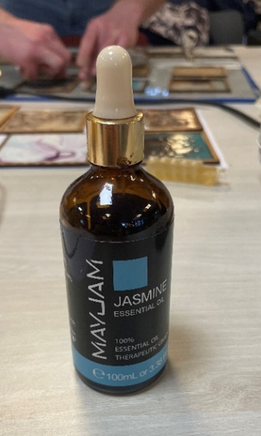
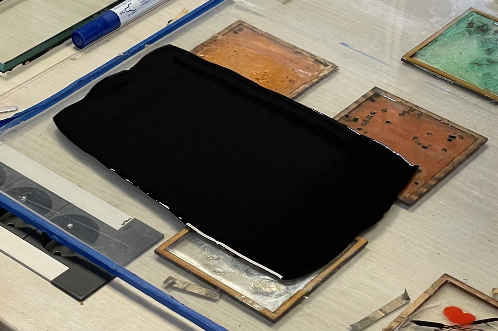
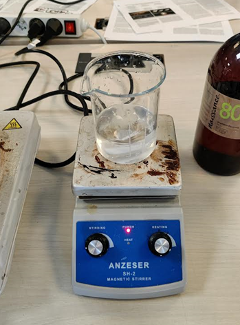
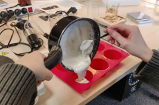
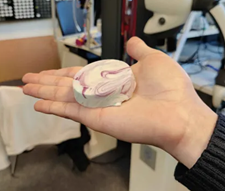

add carbon black for conductive version
3D Gel alginate
1. Prepare 30g of glycerin and 100g of water, mix them and start stirring
2. While it stirs, carefully add 50g of gelatin, then let it settle for 10 mins
3. Reheat the preparation and start stirring it using the magnetic stirrer.
Then Slowly add 4g of alginate
The best way to stir it is by having a beaker large enough and strong enough of a stir to have a visible vortex bump in the middle of the beaker.
If the vortex is too deep that adds too much air into the mix (here the mixing is helped by a spoon as the beaker isn’t wide enough).
It is best to avoid making alginate crumbs at that step.
4. Let it stir for a little to give time to the solution to get fully homogenous (~5min), try to remove some of the white foam that might have formed on the preparation (these are air bubbles, we don’t want that).
Once ready, pour the preparation in molds, and cover them.
5. Carefully unmold the Gel
And voila :D
Alginate sheet + conductive version
1. Prepare and mix 100g of water and 5g of glycerin
2. Then add 4g of alginate, stir until alginate crumbs are fully dissolved. The result should be transparent and liquid. Be careful that the alginate isn’t expired, otherwise the result will be viscous and cloudy (the alginate can be tested in advance: clear = good; cloudy & yellowish = bad).
3. Add 1-3 drops of essential oil (helps with conservation and smell)

4. (conductive alginate sheet):
Carefully add to the mix 2.3g of carbon black (careful, this is very volatile; gloves are advised),
Preferably add the carbon black in two instances: 1g + 1.3g.
Mix with great care (like whisking eggs in slow motion).
5. Once ready pour the preparation on a clean glass sheet.
Then even out the thickness using a plastic ruler (avoid metalic rulers)
Zip-ties can be added to the ruler to help maintain the thickness/height for that process
Then let it dry (~24h in a well ventilated area)

6. Once dry, cut out the sheets in clean rectangles using a cutter.
Warning, those sheets stick a bit too well to themselves and each other, if a sheet folds on itself, good luck to unfold it.
Then detach the bioplastic sheets. They can now be safely stored on an actual plastic sheet.
Gelatin foam
1. Prepare 60g of water and add to it 30g of glycerin (vegetal glycerin here)
2. Start stirring it using a Magnetic stirrer

3. While it stirs, carefully add 45g of gelatin (dried bovine gelatin here), then let it settle for 10 mins,
(the mixture will jellify quickly, we can remove the magnetic stir later)
4. Get the jellified preparation out of the beaker (can be scooped out using a spoon), and gently melt it on a hot pot until liquified (for ~6min),
It is strongly advised to avoid making any bubbles during this process.
5. Once Liquified, add 6g of soap and stir the mixture with a whip, whip it until achieving a white viscous paste. At that point, colorings can be added.
6. Pour in molds to re-jellify for an hour
7. And done :D
Gelatin sheets
In a similar fashion to gelatin foam,
1. Prepare 30g of water and add to it 3,8g of glycerin (vegetal glycerin here)
2. Start stirring using a Magnetic stirrer
3. While it stirs, carefully add 6g of gelatin (dried bovine gelatin here), then let it settle for 10 mins, (the mixture will jellify quickly, we can remove the magnetic stir later)
4. Get the jellified preparation out of the beaker (can be scooped out using a spoon), and gently melt it on a hot pot until liquified (for ~6min),
It is strongly advised to avoid making any bubble during this process.
5. Once liquified (remove the magnetic stir) the gelatin sheets are ready to be poured. Pour it on a clean glass pane, with some cardboard/wood border walls to keep it in place.
Colorings and other substances can be added for color and texture (see Physical Library).
Wait until it's dried (~6h) before careful removal (a scalpel can be used)